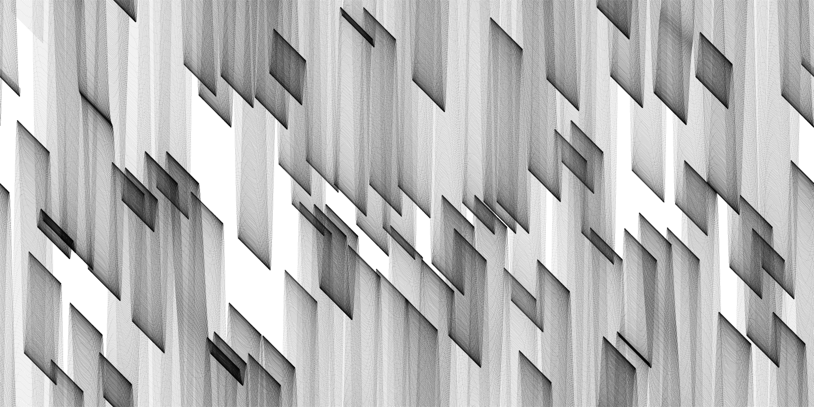
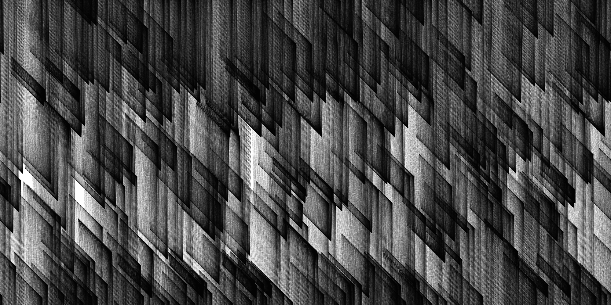
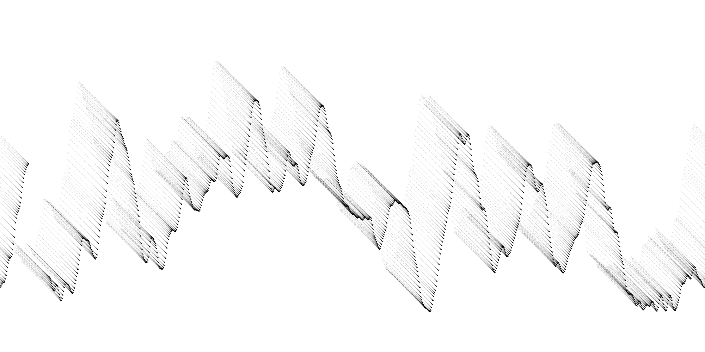
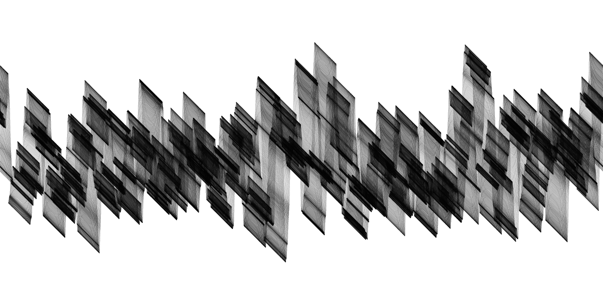

Noise
These prints are initialized with a set number of nodes with values, and the nodes are subsequently moved in each canvas iteration. In each piece, the canvas itself may move or be rotated.
All of the prints I do can be generated at any requested size, and I can frame them if you like. I ask for $350 for each generated piece.
Please look further to see examples of the types of parameters you can request in a piece.

Every frame, the canvas is moved following a function of sinusoidal time.
Generation method: Simplex Noise
50,000 items created
Division of 777
45 Frames
|

Generation method: Simplex Noise
100,000 items created
Division of 500
Noise Seed of 10
103 Frames
|

Generation method: Perlin Noise
1,000 items created
Division of 50
Noise Seed of 25
372 Frames
|

Generation method: Perlin Noise
100,000 items created
Division of 1066
Noise Seed of 7
40 Frames
|